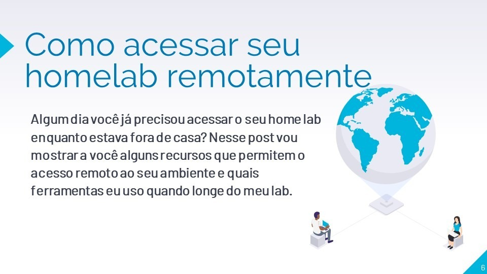
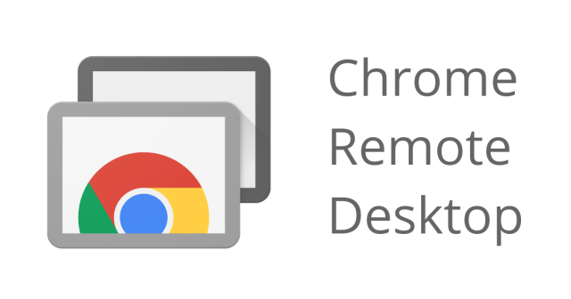
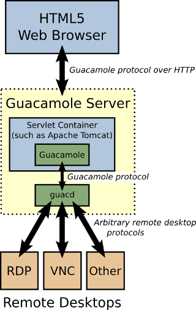
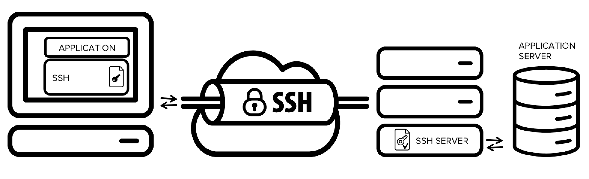

Como acessar seu homelab remotamente
Blog homelabCompartilhe esse post nas redes sociais...

Olá Homelabers!
Algum dia você já precisou acessar o seu homelab enquanto estava fora de casa? Seja no trabalho ou em alguma viagem? Eu aposto que sim! Então nesse post, vou mostrar a vocês as ferramentas mais comuns para acessar remotamente o seu ambiente e também os metodos que eu costumo usar.
Primeiramente quero deixar claro que você deve tomar MUITO CUIDADO sempre que expor algum serviço para internet, você pode comprometer seus dados caso haja algum acesso indevido. Então, se você for utilizar alguma das ferramentas ou técnicas descritas nesse post, é por sua conta e risco ok? Afinal você não quer ter o seu lab invadido e e usado para minerar bitcoins para os safados da internet certo? Dito isso, vamos ao post!
Meu cenário atual:
O cenário do meu lab é o seguinte:
Internet –> Modem Vivo Fibra em Bridge –> USG (Router) –> Switch –> Servidores Lab
Como a grande maioria das pessoas, eu não tenho uma conexão de internet com IP fixo, então uso um serviço de DDNS (DNS Dinâmico) que informa qual o IP atual da minha conexão. Hoje eu utilizo um scriptizinho maroto rodando em Docker para atualizar o meu DNS na CloudFlare. Tenho o domínio homelab.srv.br registrado e acesso tudo por essa url.
Outro ponto a ser levado em consideração é que por padrão as operadoras limitam o acesso as portas baixas e mais comuns. Ex. 80, 443, 21, 22, 3389 etc. Portanto, você quase sempre vai precisar configurar o Portforward para acessar qualquer coisa no seu lab.
Cada roteador tem a sua maneira para fazer essa configuração, basta procurar no google ou dar uma olhada nesse site
Premissas
Essas são algumas das premissas que usei para escolher qual tipo de acesso remoto teria para o meu home lab:
- Simples de instalar, manter e utilizar
- Grátis ou com um baixo custo
- Seguro
- Acesso via celular ou tablet
- Acesso de qualquer sistema operacional
- Acesso Client-To-Site
- Acesso de qualquer lugar, mesmo atrás de firewalls e politicas de segurança restritas (ex. no PC da FIRMA cheio de GPOs e sem acesso administrador).
Então vamos as soluções:
Google Chrome Remote Desktop

Por incrível que pareça, Google Chrome Remote Desktop é uma das soluções mais simples que existem para acesso remoto. Basta instalar um plugin no Google Chrome, configurar sua conta do Gmail e pronto. Não é preciso fazer nenhuma configuração no roteador ou criar Port forward, todo o acesso é transparente.
Eu utilizo aqui o Google Remote Desktop instalado em uma VM Windows (mas pode ser qualquer SO que rode Google Chrome) que eu chamo de “Jump Server”. Essa VM fica ligada o tempo todo e quando estou fora, basta abrir o Chrome, acessar o site escolher o PC ao qual eu quero logar, colocar um PIN e voilá!
Talvez você tenha alguma dificuldade em utilizar o Google Remote Desktop se o PC da sua empresa tiver restrições. Eu já tive!
VPN
Existem diversas soluções de VPN para acesso remoto, algumas são free outras são pagas.
A maior vantagem que eu vejo no acesso VPN é que você pode criar várias camadas de segurança, como por exemplo qual IP ou range de IPs publicos podem fechar VPN com o seu lab, pode limitar portas, etc.
A desvantagem é que se você estiver utilizando o PC da sua empresa, geralmente você não vai poder instalar um client ou mesmo criar um perfil de VPN.
Aqui eu utilizo dois tipos de VPN. Via software - utilizo o VeeamPN - e via Hardware conectando diretamente no meu router USG da Ubiquiti.
Para fechar VPN via VeeamPN eu tive que primeiro configurar um serviço de DDNS e depois configurar o Port Forward no routeador.
Já para fechar VPN via Hardware com o USG eu precisei apenas configurar o serviço de DDNS e fazer o setup no router, não foi preciso configurar Port Forward.
Algumas soluções de VPN para você pesquisar:
Caso você opte por usar uma VPN via software, você pode fazer essa instalação em uma VM ou ainda usar um raspberry pi para isso. De uma olhada no projeto PiVPN
Se você fizer questão de ter um hardware dedicado, você pode procurar por equipamentos usados como firewalls da Cisco, Checkpoint, etc.
Outra opção é verificar se o seu Modem ou Roteador tem a feature de acesso VPN embarcado, alguns roteadores mais simples já permitem essa configuração.
Apache Guacamole
O Guacamole é um client de acesso remoto baseado em HTML5 que suporta os protocolos mais conhecidos e utilizados como VNC, RDP e SSH. É uma excelente opção para quem não pode instalar nada no PC do trabalho ou precisa frequentemente acessar o lab de qualquer PC, pois basta um browser e você terá acesso ao seu lab. E o Guacamole é totalmente free!
Aqui eu uso o Guacamole rodando em uma VM, pois foi a única maneira que eu encontrei de acessar o meu lab da rede da empresa em que eu estava trabalhando.
 Essa é a arquitetura do Guacamole.
O Ricardo Conzatti (@ricardoconzatti) do blog Solutions4Crowds escreveu um post bem bacana sobre a instalação do Guacamole
Túnel SSH

Essa opção eu confesso que nunca cheguei a utilizar, mas enquanto pesquisava para escrever esse post, vi que é uma alternativa muito comum e bastante utilizada.
Basicamente você deve fazer conexão SSH em uma determinada porta em um host bastião (bastion server) e cria um tunel para um outro host/porta no servidor que você quer acessar.
Particularmente, eu acho complicado, e não tão prático. Mas novamente, é uma solução bastante popular e eu quero testar e aprender no futuro.
Usando essa solução de acesso remoto, você deve cuidar muito bem da segurança, não usar senha e sim chaves criptografadas, ter um bom firewall e outras soluções para prevenir invasões ao seu lab.
Enquanto pesquisava, encontrei esse post que mostra um bom exemplo de como configurar acesso remoto com túnel ssh reverso.
Microsoft Remote Desktop
O Remote Desktop Services da Microsoft é uma solução bastante robusta de acesso remoto e muito utilizada em ambientes corporativos, mas ao mesmo tempo é um pouco mais complicada de instalar e configurar e necessita licenciamento, tanto de Windows como para cada cliente que acessará o serviço.
Você pode utilizar como aprendizado - afinal, é para isso que temos nosso Home Lab certo? - mas se você busca algo mais simples, talvez o Remote Desktop não seja para você.
Resista a tentação de expor o serviço de RDP (porta 3389) diretamente na internet se você não souber o que está fazendo. Vai funcionar? Sim! Mas seu ambiente ficará vulnerável a ataques e você deve tomar muito cuidado em relação a segurança, senhas de acesso etc.
Mais informações sobre o Microsoft Remote Desktop Services aqui
Outros
Coloquei na categoria outros aqueles softwares tradicionais de mercado, pois eu acredito que as opções acima são melhores para o acesso remoto e particularmente não gosto de usá-los.
A maioria desses software tem falhas de segurança, são pagos ou oferecem versões free bastante limitadas. Outro ponto a ser considerado é que a maioria das empresas bloqueiam o uso desses softwares. Mas não posso negar que são uma opção.
Alguns exemplos:
- Teamviwer
- Radmin
- VNC
- LogmeIn
- NoMachine
O que eu uso no meu Home lab?
Hoje eu tenho 4 formas de acessar o meu lab remotamente
- VPN L2TP rodando no USG
- VeeamPN rodando em uma VM
- Apache Guacamole com 2FA no Google Authenticator
- Chrome Remote Desktop em uma VM “Jump Server”
Cada um dos acessos tem suas vantagens e desvantagens, mas tem funcionado muito bem para mim até o momento.
O que você usa para acesso remoto ao seu Lab?
Eu sei que deixei alguns software ou serviços de fora e fiz isso pelo simples fato de não conhecer a solução.
Como disse acima, hoje tenho 4 maneiras de acessar o meu lab e todas elas me atendem completamente.
Me escreva no twitter @homelaber contando qual ou quais ferramentas de acesso remoto você utiliza para acessar o seu lab ou o seu ambiente.
Até o próximo post!
–VC
Ahhhh se você chegou até aqui merece ganhar alguma coisa certo? Eu vou dar para o primeiro que me enviar um tweet com o texto “Eu ganhei um voucher de treinamento da @KaSolution no blog @homelaber” vai ganhar um voucher com 10% de desconto em qualquer treinamento da Ka Solution Eu ganhei um voucher de treinamento da @KaSolution no blog @homelaber
Mas só vale para o primeiro a tuitar a frase certa e tem que estar seguindo o @homelaber e o @kasolution heim! Valendo!!!!!
Compartilhe esse post nas redes sociais...
Valdecir Carvalho
Nerd e pai orgulhoso da Mariana e João. Profissional Sênior de TI com foco em arquitetura de infraestrutura e cloud computing. Blogueiro, podcaster, palestrante, amante de comunidades técnicas, fotógrafo aposentado e adora jogos antigos.
#vExpert · #VMUGLeader · #VUGBrasil · #vBronwBagBrasil · #VeeamVanguard